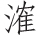

今我不乐思岳阳 [1] ，身欲奋飞病在床。美人娟娟隔秋水 [2] ，濯足洞庭望八荒 [3] 。鸿飞冥冥日月白 [4] ，青枫叶赤天雨霜 [5] 。玉京群帝集北斗 [6] ，或骑麒麟翳凤凰 [7] 。芙蓉旌旗烟雾落 [8] ，影动倒景摇潇湘 [9] 。星宫之君醉琼浆 [10] ，羽人稀少不在旁 [11] 。似闻昨者赤松子，恐是汉代韩张良。昔随刘氏定长安，帷幄未改神惨伤 [12] 。国家成败吾岂敢，色难腥腐餐枫香 [13] 。周南留滞古所惜 [14] ，南极老人应寿昌 [15] 。美人胡为隔秋水，焉得置之贡玉堂 [16] ？
【题解】
此诗为大历元年（766）秋在夔州（今重庆奉节）作。谏议，官名，即谏议大夫，掌侍从赞相，规谏讽谕。韩注，生平不详，钱易《南部新书•癸集》有“江西客司韩注”云云，或即其人。或谓注乃“汯”之误，汯为玄宗朝宰相韩休之子，肃宗上元中为谏议大夫。观诗意，当是韩去官后隐居岳阳。
【评析】
此诗首叙怀思韩谏议之意，次言显贵盈朝，高人远引，申明谏议去朝之故，末乃惜其终隐，而望其再出。写得渺茫恍惚，隐曲婉转，若断若续，别具一格。卢世

曰：“竟是一首游仙诗，若直看作游仙，精色又减，妙在是寄韩谏议。”（《读杜私言》）浦起龙谓其“源出楚骚，气味大类谪仙（李白）”（《读杜心解》卷二之三）。【注释】
[1] 岳阳：即今湖南岳阳市，临洞庭湖。
[2] 美人：以美人比君子，指韩谏议。娟娟：美好貌。隔秋水：用《诗经•秦风•蒹葭》“所谓伊人，在水一方；溯洄从之，道阻且长”之意。时杜甫流寓夔州，而韩隐居岳阳，故曰“隔秋水”。
[3] 濯（zhuó）足：以水洗脚，比喻超脱尘俗。语出《孟子•离娄上》：“沧浪之水浊兮，可以濯吾足。”洞庭：湖名，在今湖南境内。八荒：八方极远之地。
[4] 鸿：鹄，即天鹅。冥冥：高远貌。扬雄《法言•问明》：“鸿飞冥冥，弋人何篡（捕捉）焉。”此喻韩之遁世。日月白：喻其去就分明。
[5] 青枫叶赤：时属深秋，霜降枫叶变红。雨：作动词用。
[6] 玉京：见前李白《庐山谣寄卢侍御虚舟》“手把芙蓉朝玉京”句注。群帝：犹群仙。北斗：北斗七星。《晋书•天文志上》：“斗为人君之象，号令之主也。”
[7] 翳：此有舞意。《集仙录》：“群仙毕集，位高者乘鸾（即凤凰），次乘麒麟，次乘龙。”（《杜诗详注》卷十七引）
[8] 芙蓉旌旗：形容旗帜的华美。烟雾落：谓旌旗如落烟雾之中，隐约闪烁。形容旌旗之多。
[9] “影动”句：谓天上之景倒映于潇、湘之中。潇、湘为湖南二水名，在永州汇合，流入洞庭湖。以上四句，旧注谓借仙官以喻朝贵。北斗象君，群帝指王公。麟凤旌旗，言骑从仪卫之盛。影动潇湘，谓声势倾动南楚。
[10] 星宫之君：比沾恩之近侍。琼浆：指美酒。
[11] 羽人：飞仙。旧注谓羽人稀少指韩已去位。
[12] 赤松子：传说中仙人，为神农时雨师。韩张良：据《汉书•张良传》：“张良，字子房，其先韩人也。”秦灭韩，张良曾于博浪沙椎击秦始皇，中副车。后从刘邦定天下，封留侯，高祖曰：“运筹帷幄中，决胜千里外，子房功也。”张良功成欲退，曰：“愿弃人间事，欲从赤松子游耳。”乃学仙道，慕轻举。高祖崩，吕后掌权，强留辅政。张良不得已，故曰“神惨伤”。以上四句，以张良比韩，称韩张良以切韩之姓。仇兆鳌曰：“以张良方韩，是尝平定西京者。”（《杜诗详注》卷十七）意谓韩在安史之乱时，曾从肃宗收复长安有功。
[13] 吾岂敢：意谓怎敢置国家成败于不顾。色难腥腐，《神仙传》卷五载：壶公数试费长房，令其啖溷，臭恶非常，房色难之。色难：谓面有难色。枫香：枫树有脂而香，道教以之和药，服之以求长生，故曰“餐”。二句谓韩虽不忘忧国，但因厌恶浊世而思洁身退隐。餐枫香：意即归隐山林。
[14] 周南留滞：《史记•太史公自序》：“是岁，天子始建汉家之封，而太史公留滞周南，不得与从事，故发愤且卒。”周南：古洛阳之地。此以太史公（司马谈）留滞周南，比韩隐居岳阳。
[15] 南极老人：星名，喻指韩。《晋书•天文志上》：“老人一星，在弧南，一曰南极。……见则治平，主寿昌。”
[16] 玉堂：即玉殿，在汉未央宫内，此指朝廷。